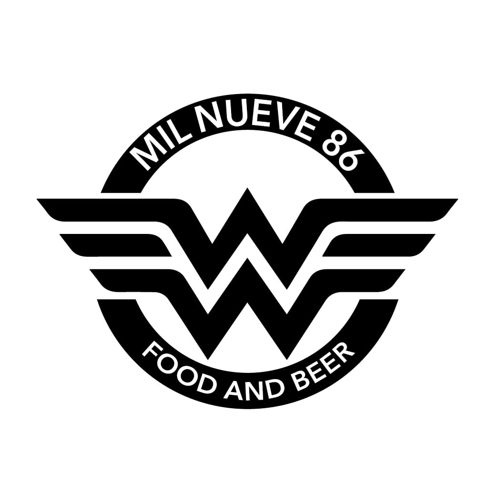

GOOD PEOPLE & GOOD BEER
Aca vas a poder encontrar una gran variedad de Cervezas, tanto comunes como para personas Celiacas. Contamos con una gran variedad de comidas para que puedas acompañar esas ricas pintas, teniendo cocina tradicional y apta, ademas del sabor, la salud cuenta